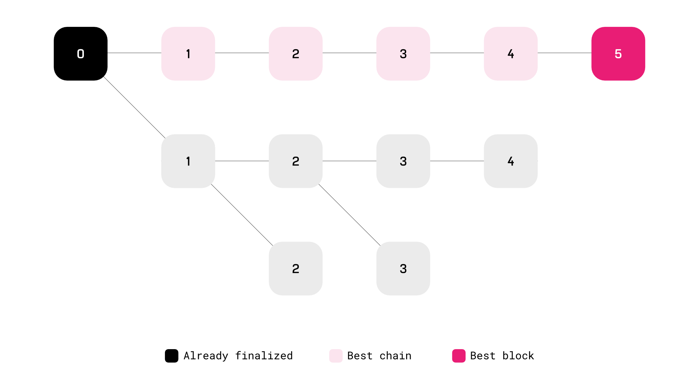
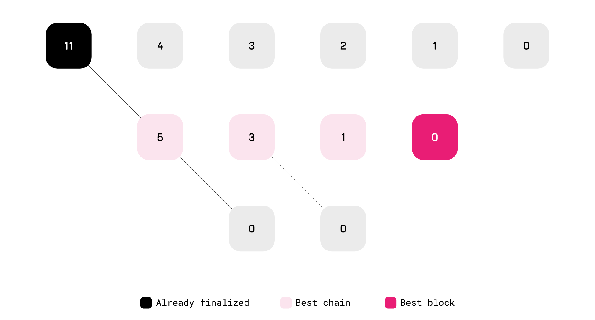

Consensus
This article presents reference and conceptual information about the different consensus mechanisms used in Substrate.
Blockchain nodes use consensus engines to agree on the blockchain's state. There are different consensus engines with various tradeoffs that are supported "out-of-the-box" in Substrate. Generally, two components are necessary for achieving consensus:
-
Block authoring (or construction): the mechanism for nodes to create new blocks.
-
Block finalization: the mechanism to handle forks and choose which chain is the canonical chain.
Block authoring
Some nodes in a blockchain network are able to produce new blocks, a process known as block authoring. Exactly which nodes may author blocks depends on which consensus engine you're using.
In a centralized network, a single node might author all the blocks, whereas in a completely permissionless network, an algorithm must select the block author at each height.
Substrate provides several block construction algorithms and also allows you to create your own. These are:
- Aura (based on Round-robin scheduling).
- BABE (slot-based scheduling)
- Proof of Work
Some examples:
-
AURA and BABE (slot-based algorithms): there must be a known set of validators who are permitted to produce blocks. Time is divided up into discrete slots, and during each slot only some of the validators may produce a block. The specifics of which validators can author blocks during each slot vary from engine to engine.
-
Proof of Work: in proof-of-work systems like Bitcoin, any node may produce a block at any time, so long as it has solved a computationally-intensive problem. Solving the problem takes CPU time, and thus miners can only produce blocks in proportion with their computing resources. Substrate provides a proof-of-work block production engine.
Fork choice rules
Forks occur when two blocks reference the same parent. Block finalization is a mechanism that resolves forks such that only the canonical chain exists.
A fork choice rule is an algorithm that takes a blockchain and selects the "best" chain, and thus the one that should be extended.
Substrate exposes this concept through the SelectChain Trait.
Similarly, you could write your custom fork choice rule, or use an existing one like GRANDPA which comes out of the box.
Some examples:
- GRANDPA, the finality gadget used in Polkadot-like chains.
- GHOST, the finality gadget used in Ethereum 1.0.
In GRANDPA, the longest chain rule simply says that the best chain is the longest chain.
Substrate provides this chain selection rule with the LongestChain struct.
GRANDPA uses the longest chain rule in its voting mechanism.

The Greedy Heaviest Observed SubTree (GHOST) rule says that, starting at the genesis block, each fork is resolved by choosing the branch that has the most blocks built on it recursively.

Finality
Users in any system want to know when their transactions are finalized, and blockchain is no different. In some traditional systems, finality happens when a receipt is handed over, or papers are signed.
Using the block authoring schemes and fork choice rules described so far, transactions are never entirely finalized. There is always a chance that a longer (or heavier) chain will come along and revert your transaction. However, the more blocks are built on top of a particular block, the less likely it is to ever be reverted. In this way, block authoring along with a proper fork choice rule provides probabilistic finality.
When deterministic finality is desired, a finality gadget can be added to the blockchain's logic. Members of a fixed authority set cast finality votes, and when enough votes have been cast for a certain block, the block is deemed final. In most systems, this threshold is 2/3. Blocks that have been finalized by such a gadget cannot be reverted without external coordination such as a hard fork.
Some consensus systems couple block production and finality, as in, finalization is part of the block production process and a new block N+1 cannot be authored until block N is finalize.
In Substrate, the two processes are isolated from one another.
It allows you to use any block production engine on its own with probabilistic finality or couple it with a finality gadget to have determinsitic finality.
In systems that use a finality gadget, the fork choice rule must be modified to consider the results of the finality game. For example, instead of taking the longest chain period, a node would take the longest chain that contains the most recently finalized block.
Consensus engines in Substrate
Although developers are welcome to implement their own, every Substrate node template comes with GRANDPA and AURA out of the box. Substrate also provides implementations of BABE and Proof of Work based consensus.
Aura
Aura provides a slot-based block authoring mechanism. In Aura a known set of authorities take turns producing blocks.
BABE
BABE provides slot-based block authoring with a known set of validators and typically used in proof-of-stake systems. Unlike Aura, slot assignment is based on the evaluation of a Verifiable Random Function (VRF). Each validator is assigned a weight for an epoch. This epoch is broken up into slots and the validator evaluates its VRF at each slot. For each slot that the validator's VRF output is below its weight, it is allowed to author a block.
Because multiple validators may be able to produce a block during the same slot, forks are more common in BABE than they are in Aura, even in good network conditions.
Substrate's implementation of BABE also has a fallback mechanism for when no authorities are chosen in a given slot. These "secondary" slot assignments allow BABE to achieve a constant block time.
Proof of Work
Proof-of-work block authoring is not slot-based and does not require a known authority set. In proof of work, anyone can produce a block at any time, so long as they can solve a computationally challenging problem (typically a hash preimage search). The difficulty of this problem can be tuned to provide a statistical target block time.
GRANDPA
GRANDPA provides block finalization. It has a known weighted authority set like BABE. However, GRANDPA does not author blocks; it just listens to gossip about blocks that have been produced by some authoring engine. GRANDPA validators vote on chains, not blocks, i.e. they vote on a block that they consider "best" and their votes are applied transitively to all previous blocks. Once more than 2/3 of the GRANDPA authorities have voted for a particular block, it is considered final.
All deterministic finality algorithms, including GRANDPA, require at least 2f + 1 non-faulty nodes, where f is the number of faulty or malicious nodes.
Learn more about where this threshold comes from and why it is ideal in the seminal paper Reaching Agreement in the Presence of Faults or on Wikipedia: Byzantine Fault.
Not all consensus protocols define a single, canonical chain. Some protocols validate directed acyclic graphs (DAG) when two blocks with the same parent do not have conflicting state changes. See AlephBFT for such an example.